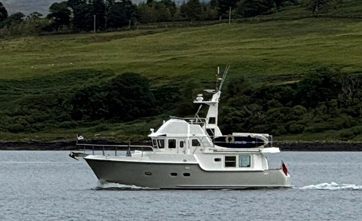

Visual explanations
Diagrams, marks and scenarios help connect the words with what you are learning to recognise.
Understand the rules of the road, build your boating knowledge and take a more informed next step on the water.
Explore the courses →
It is possible to start recreational boating in the UK without first completing a formal skipper course. But owning a boat and understanding how to use it responsibly are different things.
We created Helmlore to give people an accessible place to start: learn the rules of the road, recognise lights and buoyage, understand nautical terms, and begin making sense of navigation, safety and boat preparation.
The aim is to help you go afloat with a better understanding of what you need to know—and recognise where you need more learning, practical experience or formal training.
In UK waters, many small private pleasure vessels do not require the skipper to hold a certificate of competence. That does not remove the duty to follow the rules or other requirements that may apply to the vessel, equipment, location or use. See the RYA’s pleasure craft regulations guidance for the detail.
Helmlore was developed by Cliff Taylor, drawing on a commercial skipper background, marine contracting and hands-on experience of owning, maintaining and cruising boats.
That boating background shapes the purpose of the platform: share useful knowledge in a way people can understand, practise and revisit, without making a formal course their first barrier to learning.
Helmlore is an independent project, developed through testing and feedback from the people using it.
Diagrams, marks and scenarios help connect the words with what you are learning to recognise.
Questions and practical situations help you apply the lesson and identify what needs another look.
A free account keeps your learning progress together so you can continue later or revisit a subject.
The lessons draw on published boating rules and guidance. For example, buoyage learning refers to the IALA Maritime Buoyage System, and the inland waterways pathway uses CEVNI as its reference.
Technical signs and marks are checked against the relevant reference material during development. Teaching diagrams are kept separate from decorative course photographs, and fictional training situations are identified as examples.
Courses are tested for their lesson flow, questions and display. Feedback helps identify unclear explanations, content errors and things that need improving as the platform develops.
If something looks wrong, email Helmlore.com@gmail.com with the course, lesson or question name and what you noticed. A screenshot is useful too.
Helmlore offers free, informal learning. You can use it to get an introduction to boating subjects, refresh your knowledge or build familiarity before joining a recognised training course.
It does not award an official boating qualification or certify that someone is ready to skipper a vessel. Formal instruction and supervised practical experience help turn that understanding into skills on the water.
Explore nine training pathways covering watchkeeping, inland waterways, safety, tides, boat systems, compass work, chart work, passage planning and diesel engine basics.